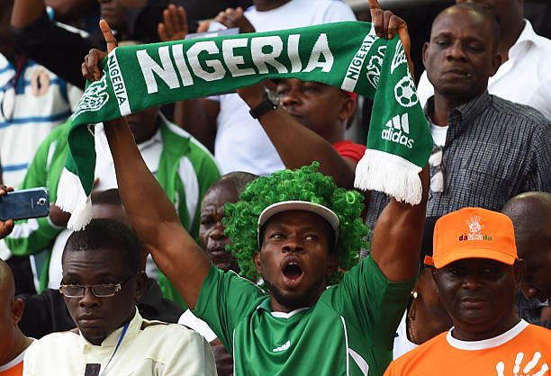

Nigeria (/naɪˈdʒɪəriə/ Listen ny-JEER-ee-ə),[a] officially the Federal Republic of Nigeria, is a country in West Africa. It is situated between the Sahel to the north and the Gulf of Guinea to the south in the Atlantic Ocean. It covers an area of 923,769 square kilometres (356,669 sq mi), and with a population of over 225 million, it is the most populous country in Africa, and the world's sixth-most populous country. Nigeria borders Niger in the north, Chad in the northeast, Cameroon in the east, and Benin in the west. Nigeria is a federal republic comprising 36 states and the Federal Capital Territory, where the capital, Abuja, is located. The largest city in Nigeria is Lagos, one of the largest metropolitan areas in the world and the second-largest in Africa. Nigeria has been home to several indigenous pre-colonial states and kingdoms since the second millennium BC, with the Nok civilization in the 15th century BC, marking the first internal unification in the country. The modern state originated with British colonialization in the 19th century, taking its present territorial shape with the merging of the Southern Nigeria Protectorate and Northern Nigeria Protectorate in 1914 by Lord Lugard. The British set up administrative and legal structures while practising indirect rule through traditional chiefdoms in the Nigeria region.[9] Nigeria became a formally independent federation on 1 October 1960. It experienced a civil war from 1967 to 1970, followed by a succession of military dictatorships and democratically elected civilian governments until achieving a stable democracy in the 1999 presidential election. The 2015 general election was the first time an incumbent president failed to be re-elected.[10] Nigeria is a multinational state inhabited by more than 250 ethnic groups speaking 500 distinct languages, all identifying with a wide variety of cultures.[11][12][13] The three largest ethnic groups are the Hausa in the north, Yoruba in the west, and Igbo in the east, together constituting over 60% of the total population.[14] The official language is English, chosen to facilitate linguistic unity at the national level.[15] Nigeria's constitution ensures freedom of religion[16] and it is home to some of the world's largest Muslim and Christian populations.[17] Nigeria is divided roughly in half between Muslims, who live mostly in the north, and Christians, who live mostly in the south; indigenous religions, such as those native to the Igbo and Yoruba ethnicities, are in the minority.[18] Nigeria is a regional power in Africa and a middle and emerging power in international affairs. Nigeria's economy is the largest in Africa, the 31st-largest in the world by nominal GDP, and 26th-largest by PPP. Nigeria is often referred to as the Giant of Africa owing to its large population and economy[19] and is considered to be an emerging market by the World Bank. However, the country ranks very low in the Human Development Index and remains one of the most corrupt nations in the world.[20][21] Nigeria is a founding member of the African Union and a member of many international organizations, including the United Nations, the Commonwealth of Nations, NAM,[22] the Economic Community of West African States, Organisation of Islamic Cooperation and OPEC. It is also a member of the informal MINT group of countries and is one of the Next Eleven economies
Kainji Dam excavations showed ironworking by the 2nd century BC. The transition from Neolithic times to the Iron Age was accomplished without intermediate bronze production. Others believe or suggest the technology moved west from the Nile Valley, although the Iron Age in the Niger River valley and the forest region appears to predate the introduction of metallurgy in the upper savanna by more than 800 years. The Nok civilization of Nigeria thrived between 1,500 BC and AD 200. It produced life-sized terracotta figures that are some of the earliest known sculptures in Sub-Saharan Africa[25][26][27][28][29] and smelted iron by about 550 BC and possibly a few centuries earlier.[30][31][32] Evidence of iron smelting has also been excavated at sites in the Nsukka region of southeast Nigeria: dating to 2000 BC at the site of Lejja[33] and to 750 BC and at the site of Opi. The Kano Chronicle highlights an ancient history dating to around 999 AD of the Hausa Sahelian city-state of Kano, with other major Hausa cities (or Hausa Bakwai) of Daura, Hadeija, Kano, Katsina, Zazzau, Rano, and Gobir all having recorded histories dating back to the 10th century. With the spread of Islam from the 7th century AD, the area became known as Sudan or as Bilad Al Sudan (English: Land of the Blacks; Arabic: بلاد السودان). Since the populations were partially affiliated with the Arab Muslim culture of North Africa, they began Trans-Saharan trade and were referred to by the Arabic speakers as Al-Sudan (meaning "The Blacks") as they were considered an extended part of the Muslim world. There are early historical references by medieval Arab and Muslim historians and geographers which refer to the Kanem-Bornu Empire as the region's major centre for Islamic civilization. The Kingdom of Nri of the Igbo people consolidated in the 10th century and continued until it lost its sovereignty to the British in 1911.[34][35] Nri was ruled by the Eze Nri, and the city of Nri is considered to be the foundation of Igbo culture. Nri and Aguleri, where the Igbo creation myth originates, are in the territory of the Umeuri clan. Members of the clan trace their lineages back to the patriarchal king-figure Eri.[36] In West Africa, the oldest bronzes made using the lost wax process were from Igbo-Ukwu, a city under Nri influence.[34] The Yoruba kingdoms of Ife and Oyo in southwestern Nigeria became prominent in the 12th[37][38] and 14th[39] centuries, respectively. The oldest signs of human settlement at Ife's current site date back to the 9th century,[37] and its material culture includes terracotta and bronze figures. Pre-colonial era (1500–1850) Further information: History of Nigeria (1500–1800) Depiction of Benin City by a Dutch illustrator in 1668. The wall-like structure in the centre probably represents the walls of Benin, housing the Benin bronze decorated historic Benin City Palace. In the 16th century, Portuguese explorers were the first Europeans to begin important, direct trade with peoples of southern Nigeria, at the port they named Lagos (formerly Eko) and in Calabar along the region Slave Coast. Europeans traded goods with peoples at the coast; coastal trade with Europeans also marked the beginnings of the Atlantic slave trade.[40] The port of Calabar on the historical Bight of Biafra (now commonly referred to as the Bight of Bonny) became one of the largest slave-trading posts in West Africa in the era of the transatlantic slave trade. Other major slaving ports in Nigeria were located in Badagry, Lagos on the Bight of Benin and Bonny Island on the Bight of Biafra.[40][41] The majority of those enslaved and taken to these ports were captured in raids and wars.[42] Usually, the captives were taken back to the conquerors' territory as forced labour; after time, they were sometimes acculturated and absorbed into the conquerors' society. Slave routes were established throughout Nigeria linking the hinterland areas with the major coastal ports. Some of the more prolific slave-trading kingdoms who participated in the transatlantic slave trade were linked with the Edo's Benin Empire in the south, Oyo Empire in the southwest, and the Aro Confederacy in the southeast.[40][41] Benin's power lasted between the 15th and 19th centuries.[43] Oyo, at its territorial zenith in the late 17th to early 18th centuries, extended its influence from western Nigeria to modern-day Togo.
Depiction of Benin City by a Dutch illustrator in 1668. The wall-like structure in the centre probably represents the walls of Benin, housing the Benin bronze decorated historic Benin City Palace. In the 16th century, Portuguese explorers were the first Europeans to begin important, direct trade with peoples of southern Nigeria, at the port they named Lagos (formerly Eko) and in Calabar along the region Slave Coast. Europeans traded goods with peoples at the coast; coastal trade with Europeans also marked the beginnings of the Atlantic slave trade.[40] The port of Calabar on the historical Bight of Biafra (now commonly referred to as the Bight of Bonny) became one of the largest slave-trading posts in West Africa in the era of the transatlantic slave trade. Other major slaving ports in Nigeria were located in Badagry, Lagos on the Bight of Benin and Bonny Island on the Bight of Biafra.[40][41] The majority of those enslaved and taken to these ports were captured in raids and wars.[42] Usually, the captives were taken back to the conquerors' territory as forced labour; after time, they were sometimes acculturated and absorbed into the conquerors' society. Slave routes were established throughout Nigeria linking the hinterland areas with the major coastal ports. Some of the more prolific slave-trading kingdoms who participated in the transatlantic slave trade were linked with the Edo's Benin Empire in the south, Oyo Empire in the southwest, and the Aro Confederacy in the southeast.[40][41] Benin's power lasted between the 15th and 19th centuries.[43] Oyo, at its territorial zenith in the late 17th to early 18th centuries, extended its influence from western Nigeria to modern-day Togo.In the north, the incessant fighting amongst the Hausa city-states and the decline of the Bornu Empire gave rise to the Fulani people gaining headway into the region. Until this point, the Fulani a nomadic ethnic group primarily traversed the semi-desert Sahelian region, north of Sudan, with cattle and avoided trade and intermingling with the Sudanic peoples. At the beginning of the 19th century, Usman dan Fodio led a successful jihad against the Hausa Kingdoms founding the centralised Sokoto Caliphate. The empire with Arabic as its official language grew rapidly under his rule and that of his descendants, who sent out invading armies in every direction. The vast landlocked empire connected the east with the western Sudan region and made inroads down south conquering parts of the Oyo Empire (modern-day Kwara), and advanced towards the Yoruba heartland of Ibadan, to reach the Atlantic Ocean. The territory controlled by the empire included much of modern-day northern and central Nigeria. The sultan sent out emirs to establish a suzerainty over the conquered territories and promote Islamic civilization, the emirs in turn became increasingly rich and powerful through trade and slavery. By the 1890s, the largest slave population in the world, about two million, was concentrated in the territories of the Sokoto Caliphate. The use of slave labour was extensive, especially in agriculture.[44] By the time of its break-up in 1903 into various European colonies, the Sokoto Caliphate was one of the largest pre-colonial African states.[45] A changing legal imperative (the outlawing of the transatlantic slave trade in 1807) and economic imperative (a desire for political and social stability) led most European powers to support the widespread cultivation of agricultural products, such as the palm, for use in European industry. European companies engaged in the Atlantic slave trade until it was outlawed in 1807 by Britain, which up until that point had been the second largest actor practicing the slave trade. After that, the trade actually continued, as illegal smugglers purchased slaves along the coast by native slavers. Britain's West Africa Squadron sought to intercept the smugglers at sea. The rescued slaves were taken to Freetown, a colony in West Africa originally established by Lieutenant John Clarkson for the resettlement of slaves freed by Britain in North America after the American Revolutionary War.
Brief History| South East | South West | South South | Middlebelt | North East | North West |
|---|---|---|---|---|---|
| Enugu | Oyo | Bayelsa | Benue | Bornu | Sokoto |
| Anambra | Lagos | Delta | Niger | Adamawa | Zamfara |
| Ebonyi | Ogun | Edo | Nassarawa | Gombe | Kastina |